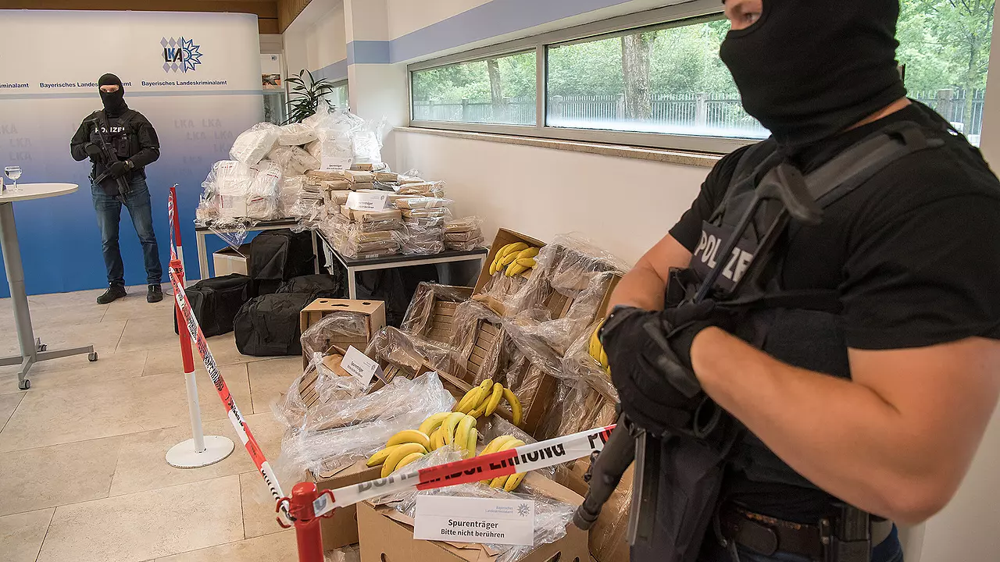

In Groß- und Umfangsverfahren ist es
empfehlenswert, auf ein Verteidigerteam mit mehreren Rechtsanwälten zu setzen. So
lässt sich eine effektive Aufnahme des Sachverhalts auch bei umfangreichen
Verfahren gewährleisten. Zugleich gewinnt das Team eine bessere Position im
Prozess gegenüber Staatsanwaltschaft und Richtern und kann weiterführende
Verteidigungsansätze erfassen.
Während sich beim Einsatz von Verteidigerteams
die Kosten normalerweise verdoppeln oder verdreifachen, können wir Ihnen durch
unsere Bürogemeinschaft bei den Kosten entgegenkommen.
Ein Deutscher ermordete im chinesischen Xiamen seine ehemalige Freundin und deren Lebensgefährten. Rechtsanwalt Barleben kämpfte mit den deutschen Diplomaten für das Leben des Täters und gegen das von einem chinesischen Gericht verhängte Todesurteil.
Todesstrafe:Diplomatie für einen Mörder
In China bringt ein Deutscher zwei Menschen um. Ihm droht die Hinrichtung. Hinter den Kulissen von Staatsbesuchen und Gipfeltreffen kämpft die Bundesregierung um sein Leben. Ein Blick auf die unbekannte Seite der Außenpolitik
Von Stefan Willeke
An einem Mittwochmorgen, als Stefan Gallon wie gewöhnlich die Süddeutsche Zeitung aufschlug, blieb er an einer Meldung auf Seite 37 hängen, die ihn nicht mehr losließ. "Doppelmord aus Eifersucht", stand da. "Ehemaliger Münchner Student soll frühere Freundin und ihren Lebensgefährten in China getötet haben." Gallon ahnte zwar, dass dieser Mord ihn beschäftigen würde. Aber er wusste nicht, dass sich der Fall schon bald zu einer komplizierten diplomatischen Angelegenheit ausweiten würde, dass er die Bundeskanzlerin erreichen sollte – und den chinesischen Regierungschef. Erst sehr viel später, im August 2014, wird der Täter in China zum Tode verurteilt, aber auch damit endet die Verwicklung nicht. Da fängt sie erst richtig an.
Stefan Gallon, inzwischen 63 Jahre alt, erfuhr vor viereinhalb Jahren von dem Mord, damals war er noch Stellvertreter des deutschen Botschafters in Prag. Dass er wenige Wochen später das deutsche Generalkonsulat im chinesischen Kanton übernehmen würde, war schon vereinbart. In seine Zuständigkeit würde dann auch die grausame Tat in Xiamen fallen, einer 2,5-Millionen-Einwohner-Stadt im Südosten Chinas. Aber noch, im Juni des Jahres 2010, interessiert sich Gallon nur aus der Ferne dafür. Er verbringt die Tage in seinem Büro im Palais Lobkowicz in Prag, dem Dienstsitz des Botschafters. Von dort aus kann er auf den berühmten Balkon blicken, auf dem Außenminister Hans-Dietrich Genscher 1989 stand, als ihm Tausende DDR-Flüchtlinge aus dem Garten der Botschaft zujubelten. Stefan Gallon ist ein erfahrener Diplomat, seit 1978 beim Auswärtigen Amt. In Houston vertrat er die Bundesrepublik, in Kairo, Bukarest, Vilnius, Bangkok, Tokio. Er hat die Minister Genscher, Kinkel, Fischer, Westerwelle und Steinmeier erlebt. Aber er hat keine Erfahrungen mit einem Doppelmörder. Gallon sucht im Internet nach Informationen und findet wenig. Der Täter heißt Lutz Schuster*. Zum Zeitpunkt der Tat ist er 33 Jahre alt. Er stammt aus einer Kleinstadt in Bayern, so viel steht fest.
Als Gallon im August 2010 ins Konsulat von Kanton wechselt, ist der diplomatische Spielraum schon sehr klein geworden. Darüber schweigt Gallon gegenüber Journalisten. Aber wer die Übersetzungen von Untersuchungsprotokollen der chinesischen Ermittler liest, muss nicht viel vom chinesischen Strafrecht verstehen, um die Schwere der Tat zu begreifen. Vorsatz. Niedere Beweggründe. Besondere Brutalität. Nicht nur ein Opfer, sondern zwei. Das alles spricht – in China – für die Todesstrafe. Am 5. Juni 2010, einem Samstagabend gegen 22.30 Uhr, so protokollieren es später Ermittler, so berichten auch Zeugen, wartet Lutz Schuster in einem Auto in der Nähe des Marco-Polo-Hotels in der Küstenstadt Xiamen. Den Wagen hat er sich von einem Freund geliehen, und er hat sich vorbereitet. Schuster ist kurz zuvor aus Deutschland angereist, hat in einem Baumarkt in Xiamen einen schweren Hammer gekauft, eine Art Vorschlaghammer, außerdem ein Messer, ein Seil und eine Rolle Klebeband. All das hat er ins Auto gelegt und wartet nun auf seine frühere Freundin Vanessa, eine 29-jährige Deutschvenezolanerin, und ihren neuen Partner, einen deutschen Geschäftsmann, der zehn Jahre älter ist als sie. Die beiden verbringen den Abend in einem der teuren Restaurants des Hotels. Als sie schließlich auf die Straße treten, um in ihr Auto zu steigen, greift Schuster sie an. Zuerst geht er auf den Mann los und schlägt mit dem Hammer auf ihn ein, sticht mit dem Messer zu. Vanessa, die Begleiterin, schreit auf und will eingreifen, aber Schuster lässt nicht von seinem Opfer ab, er trifft auch dessen Herz.
Nachdem der Mann blutend zu Boden gestürzt ist, sticht Schuster auf Vanessa ein, 46 Mal. So steht es in einem der Protokolle, die später dem Untersuchungsrichter vorgelegt werden. Beide Opfer sterben nach wenigen Minuten, auf dem Parkplatz vor dem Hotel hat sich eine riesige Blutlache gebildet. Schuster läuft nicht weg, er versteckt sich nicht. Scheinbar teilnahmslos bleibt er in der Nähe der Leichen stehen und lässt sich von den herbeigerufenen Polizisten festnehmen. Schuster hat sich während des Gerangels selbst mit dem Messer verletzt, oberhalb des Knies ist eine tiefe Schnittwunde entstanden. Er wird von Polizisten ins Zhongshan-Krankenhaus der Stadt Xiamen gebracht, bleibt dort einige Tage. Ein Mitarbeiter des deutschen Konsulats, das ihn zu betreuen hat, besucht Schuster, und eine der Fragen an ihn lautet: Wissen Sie, dass Sie zwei Menschen getötet haben? Da sagt Schuster zum ersten Mal diese merkwürdigen Sätze, die er später mehrfach wiederholen wird: "Es war ja niemand anders da. Dann muss ich es wohl gewesen sein." Er bestreitet die Tat nicht, aber Reue klingt anders.
Die deutschen Diplomaten, ob in Peking, Kanton oder Berlin, sind sofort im Bilde, sie schreiben einander kurze Mails und lange Berichte zum Fall Schuster, aber sie geben darüber gegenüber Journalisten kaum Auskunft. Deswegen stützt sich dieses Dossier auf Aussagen vieler anderer Beteiligter, von denen die meisten nicht mit ihrem Namen in der Zeitung stehen wollen. Mit Lutz Schuster, der noch immer im Gefängnis von Xiamen sitzt, hat die ZEIT nicht sprechen können, aber aus den zahlreichen Aussagen von Prozessbeobachtern, Freunden und Weggefährten sowie aus Dokumenten lässt sich ein Bild zusammenfügen, das nicht lückenlos ist, jedoch klar erkennbar. Das Bild zeigt eine unbekannte Seite von Außenpolitik. Als Fernsehzuschauer bekommt man die Kanzlerin und den Außenminister bei Staatsbesuchen oder auf Gipfeltreffen zu sehen. Oft schütteln sie die Hände von Regierungschefs und Ministern anderer Staaten. Meist lächeln sie dabei. Es wirkt dann immer so, als sei Politik mühelos. Von der Arbeit, die im Stillen stattfindet, spürt man nichts. Die Gewalttat von Xiamen ist ein Fall, der den Politikern und Diplomaten extrem viel Arbeit abverlangt. Es geht darum, einem Mörder das Leben zu retten.
In vielen Ländern der Welt sitzen Deutsche in Gefängnissen, aber nirgendwo wird ein Häftling von Mitarbeitern der Bundesregierung so intensiv betreut wie Schuster. Einen wie ihn hat es in der Geschichte der Bundesrepublik noch nicht gegeben. Schuster ist der erste Deutsche, der in China zum Tode verurteilt wurde. Mit Betrügern und Räubern, die im Ausland eine Strafe absitzen, haben die Botschafter der Bundesrepublik regelmäßig zu tun. Selten sind Todesurteile gegen Deutsche. Extrem selten sind Todesurteile, die vollstreckt werden – zuletzt bei zwei Brüdern, die im Jahr 1999 wegen Mordes in US-Bundesstaat Arizona hingerichtet wurden.
Noch lebt Lutz Schuster. Sein chinesischer Anwalt hat erklärt, dass er juristisch gegen das Urteil vorgeht. Das Obere Volksgericht der Provinz Fujian beschäftigt sich jetzt mit dem Fall. Was wird passieren, wenn dieses Gericht das Todesurteil bestätigen sollte? In keinem Land der Welt werden mehr Menschen hingerichtet als in China, schätzungsweise einige Tausend im Jahr. Die Verurteilten werden per Genickschuss getötet, oder es wird ihnen Gift injiziert. So war es bei Akmal Shaikh, einem Pakistaner mit britischem Pass, der im Jahr 2009 wegen Heroinschmuggels in China hingerichtet wurde. Verbrechen, die mit Drogen zu tun haben, werden in China in der Regel härter bestraft als Tötungsdelikte, doch das muss im Fall Schuster nichts bedeuten.
Ein Verbrechen unter Ausländern gilt als weniger strafwürdig als eines mit chinesischen Opfern, aber Schuster hat gleich zwei Menschen auf dem Gewissen. Die beiden hinterlassen einen kleinen Sohn. Der damals Zweijährige wurde von einem philippinischen Kindermädchen in der gemeinsamen Wohnung in Xiamen betreut, als Schuster die Eltern des Jungen umbrachte. Wie soll man der chinesischen Justiz klarmachen, dass dieser Deutsche nicht die Höchststrafe verdient hat? Im Auswärtigen Amt feilen Diplomaten an Formulierungen, die sie der chinesischen Seite vortragen. Die Chinesen dürfen nicht ihr Gesicht verlieren, das ist das Wichtigste. Die zentrale Botschaft der Deutschen lautet: "Dies ist ein fürchterliches Verbrechen, das auch in unserer Rechtsordnung eine harte Strafe verlangt. Wir respektieren den Strafanspruch der chinesischen Gesellschaft. Wir respektieren die Unabhängigkeit der chinesischen Entscheidungsfindung und die chinesische Verfahrenshoheit. Aber wir haben substanzielle und auch politische Schwierigkeiten mit der Todesstrafe." So oder ähnlich werden diese Gedanken oft formuliert werden, bis heute. Angela Merkel spricht sie aus, wenn sie bei Staatsbesuchen den Ministerpräsidenten Li Keqiang trifft, Außenminister Guido Westerwelle trug sie vor, sein Nachfolger Frank-Walter Steinmeier wiederholt sie, wenn er seinen chinesischen Amtskollegen sieht. Christoph Heusgen, Merkels außenpolitischer Berater, sagt diese Sätze, der Botschafter in Peking, der Generalkonsul in Kanton. Und wenn Merkel nichts davon erwähnt, weiß sie, dass einer der anderen es tut. Es muss gelingen, in einen Dialog über den Fall Schuster zu kommen, der Dialog darf nicht abreißen, das ist von Beginn an die Leitlinie der Deutschen.
An einem Morgen im Juli 2011 beginnt die Hauptverhandlung gegen den Angeklagten Schuster im Mittleren Volksgericht von Xiamen. Ein prächtiges Gebäude in der Nähe des Stadtzentrums, pompöse Treppen, ein großes Foyer. Die Verhandlung gegen Schuster findet allerdings in einem kleinen Nebenzimmer statt, ein paar Computer auf den Tischen, Stuhlreihen, Platz für 40 Zuschauer. Aus Deutschland sind Schusters älterer Bruder und der Vater angereist, ein ehemaliger Behördenleiter aus Bayern, der inzwischen als Pensionär in der Steiermark lebt. Im Zuschauerraum sitzen auch ein paar Freunde des Angeklagten und der Münchner Rechtsanwalt Michael Barleben, der zwar ein Mandat hat, aber vom Gericht nicht als Verteidiger zugelassen wurde. Der chinesische Anwalt Chen Liqun, ein angesehener Experte für Strafrecht, verteidigt Schuster. Wenn alles vorbei ist, wird Chen ein paar Reporter informieren. Die Tische vorn im Gerichtssaal sind so zusammengeschoben, dass der Vorsitzende Richter Guo Fuquan und seine zwei Beisitzer dem Angeklagten frontal gegenübersitzen. An den Seitentischen nehmen der Staatsanwalt und der Verteidiger Platz, außerdem ein Dolmetscher. Schuster beherrscht die chinesische Sprache ungewöhnlich gut, er hat Sinologie studiert, aber er spricht im Gerichtssaal nur Deutsch und lässt sich alle chinesischen Äußerungen ins Deutsche übertragen. So hört er alles zweimal und hat mehr Bedenkzeit.
Der Richter lässt die Gutachten zweier chinesischer Psychiater vortragen, die Schuster untersucht haben. Beide halten Schuster für voll zurechnungsfähig. Er habe die Tat sorgsam geplant. Die Aussagen von Zeugen, die – anders als in einem deutschen Strafprozess – nicht persönlich anwesend sind, werden verlesen. So hat ein Mitarbeiter des Baumarktes angegeben, Schuster die Tatwerkzeuge verkauft zu haben. Schuster bestätigt das. Aber er behauptet, einen Blackout gehabt zu haben. Er könne sich an die Tat nicht erinnern. Sein Verteidiger will auf eine Tötung im Affekt hinaus, eine partielle Unzurechnungsfähigkeit. Ein eher hilfloser Versuch. Vor einem chinesischen Strafgericht gilt der psychische Ausnahmezustand eines Täters nicht allzu viel. Zwei Leichen, das ist es, was zählt.
Der Angeklagte wirkt abweisend, zynisch und arrogant. Schuster zeigt keine Einsicht, keine Reue. Er verwendet distanzierende Sätze wie seine Standardfloskel "Dann muss ich es wohl gewesen sein". Am Ende, als er das Wort erteilt bekommt, beschimpft er mit wohlformulierten Sätzen, die er offenbar vorbereitet hat, das Gericht. Er würdigt die Kompetenz der Richter und Staatsanwälte herab, wird laut, und der Dolmetscher muss die Beleidigungen ins Chinesische übertragen. Wie sollen die Diplomaten ihn retten? Als der Vorsitzende Richter die Verhandlung gegen 23 Uhr beendet, wird Schuster in Handschellen ins Gefängnis von Xiamen zurückgebracht. Das Urteil steht noch aus, aber die Verhandlung ist vorbei. Ein deutscher Strafprozess, in dem es um zwei Tötungen ginge, würde niemals innerhalb eines Tages abgehandelt, ganz sicher nicht. Aber nach chinesischem Recht ist an dem Verfahren fast nichts zu beanstanden. Ein paarmal wird etwas falsch übersetzt, das merken Sprachkundige im Publikum, aber nichts Wesentliches, was Schuster schaden könnte. Nach chinesischen Maßstäben – so sehen es auch deutsche Diplomaten – ist es ein sauberes Verfahren. Natürlich wissen die Chinesen, dass die Deutschen jeden ihrer Schritte aufmerksam beobachten.
Was in den folgenden Monaten und Jahren geschieht, ist ein einzigartiger Vorgang. Das Jahr 2011 geht zu Ende, und der Richter hat das Urteil nicht gefällt. Das Jahr 2012 vergeht, und das Urteil steht noch aus, im Jahr 2013 ist es noch immer nicht da. Auch 2014 muss man lange darauf warten. Dreieinhalb Jahre vergehen bis zur Urteilsverkündung. Das liegt daran, dass sich in der Haftanstalt von Xiamen etwas abspielt, was man deutsch-chinesische Verhandlungen nennen könnte. Zwei Staaten bemühen sich um einen Deutschen, dem der Tod droht. Man sollte meinen, dass die Chinesen mit Schuster kurzen Prozess machen. Einen Schwerverbrecher zu verurteilen und hinzurichten, das kann in China eine Sache von wenigen Wochen sein. Aber mit Schuster lassen sie sich Zeit. Er ist Deutscher. Chinas wirtschaftliche Beziehungen zu Deutschland sind exzellent, die politischen Beziehungen stabil. All das könnte eine Rolle spielen.
Dem Personal im Gefängnis entgeht nicht, dass Schuster ein besonderer Häftling ist. Ein Besucher, der zu Schuster vorgelassen wird, hört von einem Wärter den Satz: "Warum nehmt ihr ihn nicht endlich mit? Dann wären wir das Problem los." Ein chinesischer Justizbeamter sagt bei einer anderen Gelegenheit zu einem Dolmetscher: "Wäre er Japaner, würde er schon nicht mehr leben." Chinesische Blogger ereifern sich im Internet: "Wäre er ein Chinese, wäre er längst tot." Schusters Vater reist gelegentlich an und besucht ihn im Knast, der Bruder, der Anwalt, und alle sechs bis acht Wochen ist Generalkonsul Stefan Gallon da. Es ist seine Pflicht, Schuster zu treffen, aber Gallon tut weit mehr, als er müsste. Er versucht, diesen Fall sachlich zu sehen und ihn sich nicht zu Herzen zu nehmen, doch manchmal gelingt es ihm nicht. Schuster kann aufbrausend und fordernd werden, aber er hat auch eine zurückhaltende Seite. Plötzlich ist er in sich gekehrt. Ein Häftling mit Vollbart und lockigem Haar sitzt dann in der Besucherzelle, ein intelligenter Mensch, der das r auf oberbayerische Art sanft rollt und in seinen stillen Phasen so harmlos wirkt wie ein deutscher Erdkundelehrer.
Schuster teilt sich seine Zelle mal mit zwölf, mal mit 15 Chinesen, die meisten von ihnen verurteilte Drogendealer. Der Besucherraum ist eine Zelle von etwa drei mal fünf Metern, in der Mitte ein Gitter, auf beiden Seiten eine Sitzbank. Eine Videokamera richtet sich ständig auf Schuster. Er wirkt gesund. Kein Eisenmangel, kein Vitaminmangel, seine Blutwerte sind in Ordnung. Besuchern erzählt er, er werde genauso ernährt wie die Chinesen im Knast. Manchmal beklagt sich Schuster über die Temperatur in der Zelle, die Hitze im Sommer, die Kälte im Winter. In den kühlen Monaten trägt er einen Wollpullover.
Meist sind seine Fingerkuppen gelb vom Tabak. Er raucht viel. Einmal bietet er einem Besucher eine Zigarette an, obwohl er weiß, dass Untersuchungshäftlinge nicht rauchen dürfen. Er kann sich kleine Annehmlichkeiten beschaffen, er bekommt ein üppiges Taschengeld ausgezahlt. Ihm werden von der Familie ein paar Hundert Euro pro Monat überwiesen, die über den chinesischen Anwalt zur Verwaltung des Gefängnisses gelangen. Das ist in China sehr viel Geld, weit mehr, als die anderen Insassen besitzen. Manchmal kauft sich Schuster im Gefängnis Bananen. Von der Leitung der Anstalt bekommt er kleine Übersetzungsaufträge, aus dem Chinesischen ins Englische und umgekehrt. Dann geht Schuster in die Gefängnisbibliothek und vertieft sich in Wörterbücher. Die Arbeit in einer Bibliothek ist ihm vertraut. Vor Jahren lief er in der Kaulbachstraße nahe dem Englischen Garten in München fast jeden Morgen über einen Hinterhof und betrat den weißen Zweckbau des Institutes für Sinologie. Dort studierte er, ungewöhnlich lange, von 1998 bis 2008.In der Bibliothek nahm Lutz Schuster damals einen Job als wissenschaftliche Hilfskraft an, er unterstützte den Assistenten Dennis Schilling. Die beiden freundeten sich ein wenig an. Eines Tages, kurz vor dem Ende des Studiums, sagte Schuster am Kopierapparat zu Schilling, dass er "Schwierigkeiten mit der Polizei" habe, es gehe um Stalking. Er verfolge seine frühere Freundin Vanessa. Sie habe ihn angezeigt, erzählte Schuster. "Über diese Trennung kam er irgendwie nie hinweg", sagt Schilling heute.
Lutz Schuster war lange Zeit ein geselliger Student, bei den Kommilitonen beliebt, in der Fachschaft aktiv, einer, den man holte, wenn irgendwo eine Feier steigen sollte. Im Jahr 2000 bewarb er sich beim Deutschen Akademischen Austauschdienst (DAAD) für ein Stipendium in Xiamen. Damals verschlug es nur eine kleine Gruppe deutscher Studenten in diese Stadt abseits der bekannten Metropolen. In Xiamen gibt es eine Universität, und dennoch hatte die Stadt bei deutschen Professoren nicht den besten Ruf. Sonne, Strände, Meeresfrüchte, eine ungewöhnlich angenehme und saubere Stadt, die es Studenten leicht macht, sich von der Wissenschaft ablenken zu lassen.Obwohl Schusters Noten nicht herausragend ausfielen, empfahl ihn einer seiner Münchner Sinologie-Professoren für dieses Stipendium. Hans van Ess sah in ihm einen "aufgeweckten Menschen". Nach einem Jahr in Xiamen sprach sich der Professor sogar für eine Verlängerung des Stipendiums aus. Lutz Schuster, schrieb van Ess dem DAAD, sei ein "engagierter Student".
In Xiamen fand Schuster sofort Freunde, auch unter Chinesen. Er hatte alles darangesetzt, schnell die Sprache zu lernen. Er beschäftigte sich an der Universität mit chinesischen Sprechgesängen, in der Freizeit bestieg er mit Freunden Berge. Für jüngere Studenten aus Deutschland, die neu in Xiamen eintrafen, wurde Schuster zu einer Autorität. Er verliebte sich in Vanessa. Auch sie studierte in München Sinologie, und wie Schuster lebte sie eine Weile in Xiamen. Vanessa war eine auffallend attraktive Frau, mit dunklem Teint und schwarzen Haaren. Ihre Familie stammte aus Venezuela. Die beiden wurden ein Paar, und als sie nach München zurückkehrten, erlebten seine Kommilitonen einen fröhlichen, manchmal überschwänglichen Lutz Schuster.
In München half er Vanessa bei Seminararbeiten, sie hatte größere Mühe mit dem Fach als ihr Freund. Gegenüber ihrem Professor Thomas Höllmann sprach sie während des Hauptstudiums auch mal von "persönlichen Problemen". Unklar blieb, ob damit Lutz Schuster gemeint war. Unwahrscheinlich ist es nicht.In der Zeit, als Schuster in München studierte, starb seine Mutter, eine Ärztin, an einem Krebsleiden. Der Sohn kam über ihren Tod nicht hinweg. Lutz Schuster sprach gegenüber anderen Studenten sehr liebevoll über seine Mutter und fast nie über den Vater. Die Ehe der Eltern war zerbrochen, als Schuster noch zu Hause gewohnt hatte. Der Vater zog später mit einer anderen Frau zusammen. Lutz Schuster geriet nach dem Tod der Mutter in depressive Phasen, die sich auf Vanessa übertrugen. Es fiel ihr immer schwerer, Schusters Zustand zu ertragen. Irgendwann hielt Vanessa den Kummer ihres Freundes nicht mehr aus und trennte sich von ihm. Das war der Punkt, an dem Schuster noch tiefer im eigenen Leid versank und sich in die Psychiatrie des Klinikums Haar bei München einweisen ließ. Er wollte die Kontrolle über sich zurückgewinnen. Etwa zwei Monate verbrachte er in einer betreuten Wohngemeinschaft mit vier anderen Patienten.
Während dieser Zeit besuchte ihn der Sinologe Dennis Schilling, sie gingen spazieren. Vanessa, habe Schuster erzählt, sei "eine unwahrscheinliche Frau", er wolle sie "unbedingt halten". Die Therapie, habe Schuster gesagt, diene ihm dazu, innerlich reif zu werden für ein neues Leben mit Vanessa. Er verkannte, dass Vanessas Entscheidung nicht zu revidieren war. Vielleicht weigerte er sich auch, die Wirklichkeit zu akzeptieren. Als er an die Universität zurückkehrte, hakte es mit seiner Magisterarbeit. Schuster verzettelte sich und fand kein Ende. Ein schwieriges Thema hatte er sich gesucht, nationale Schande zu Beginn der chinesischen Republik. Um sich von Vanessa abzulenken, nahm sich Schuster eine Auszeit und zog für ein halbes Jahr zu einem Onkel nach Vancouver in Kanada. Doch als er zurückkehrte, trauerte er ihr noch immer nach. Mit geröteten Augen saß er öfter vor seinem Professor Hans van Ess. Schuster wirkte überfordert und konfus. Van Ess sagte sich: "Ich muss ihn wohl durch den Magister ziehen." Der Professor hoffte, ihn damit stabilisieren zu können.
Mehrmals sprach er mit Schuster über dessen Liebeskummer, der auch nach Jahren nicht abklingen wollte. "Das passiert jedem mal", sagte van Ess, "das Leben geht weiter." Nein, das könne er sich nicht vorstellen, habe Schuster erwidert. Mit einer durchschnittlichen Note schloss Schuster das Studium ab, danach verloren ihn die Münchner Wissenschaftler aus den Augen. Einen der Sinologen erreichte noch die Nachricht, dass sich Vanessa in Xiamen eine Arbeitsstelle gesucht habe. Dort lernte sie einen deutschen Geschäftsmann kennen, mit dem sie schließlich ein Kind bekam. Für Lutz Schuster jedoch ergaben sich bloß Gelegenheitsjobs. Er tingelte zwischen Bayern und China, drei Wochen hier, vier Wochen dort. Er fand keine feste Arbeit und keinen Haltepunkt.
An einem der Tage, die der Häftling Schuster im Gefängnis von Xiamen verbringt, wirkt er verstört, viel kleinlauter als sonst. Er kann aggressiv werden. "Es ist mir scheißegal, ob ich hier abgehört werde", hat er mal zu einem Besucher gesagt. Inzwischen ist die Überheblichkeit verflogen. Ein Drogendealer aus einer der Nachbarzellen, mit dem Schuster sich angefreundet hatte, wurde hingerichtet. Die Nachricht macht Lutz Schuster nachdenklich.
Seiner Familie in Deutschland lässt er übermitteln, dass er früher gelegentlich Antidepressiva genommen habe. Das Mittel, das er offenbar schon vor längerer Zeit abgesetzt hat, wünscht er sich zurück. Die Familie treibt eine philippinische Psychiaterin auf, die in Hongkong lebt und dort in einer Klinik arbeitet. Die Ärztin fliegt nach Xiamen, darf Schuster besuchen, mit ihm sprechen. Sie verschreibt ihm ein Antidepressivum, Lexapro, das ihm in den Knast geliefert wird. Die Ärztin wird zu seiner Seelsorgerin, mehrfach darf sie ihn besuchen. Sie stellt bei ihm eine "exorbitante Ich-Bezogenheit" fest. Die Menschen, die sich um Schuster persönlich kümmern, werden im Gefängnis korrekt behandelt, manchmal großzügig. Nie wird eines der Gespräche unterbrochen. Die offizielle Besuchszeit läuft nach einer halben Stunde ab, aber meist dürfen die Besucher länger bleiben, manchmal eine ganze Stunde. Der Richter, der noch kein Urteil verkündet hat, ist meist anwesend, oder er schickt einen Vertreter. Der Richter lässt sich die Gespräche übersetzen, stellt hin und wieder Fragen. Dass den Chinesen nichts daran liegt, Schuster schnell hinzurichten, ist den deutschen Diplomaten klar geworden. Es könnte einen Weg geben, ihn vor der Giftspritze zu bewahren. Es ist gar nicht so, dass der eine Staat Schuster unbedingt retten und der andere Staat ihn unbedingt töten will. Zwei Staaten bemühen sich gemeinsam um ihn – vielleicht auch, weil der Fall Schuster zu unpolitisch ist, um für eine Störung des deutsch-chinesischen Verhältnisses ein plausibler Anlass zu sein. Ein Mörder sitzt in Haft, kein Regierungskritiker.
Die Chinesen sind in einer komplizierten Lage. Sie würden ihr Gesicht verlieren, wenn sie Schuster milde davonkommen ließen, während chinesische Verbrecher hingerichtet werden. Das Urteil darf nicht so wirken, als sei es vom diplomatischen Dienst der Bundesrepublik mitgeschrieben worden. Es muss ein chinesisches Urteil sein. So kann auch ein unpolitischer Krimineller ein Fall für die große Politik werden, vor allem, wenn sich in seinem Verfahren das Bestreben ausdrückt, die Unvereinbarkeit des deutschen und des chinesischen Rechtssystems durch einen diplomatischen Kunstgriff zu überbrücken. In der Haftanstalt von Xiamen bemühen sich zwei Seiten um eine Verständigung, die viel weitreichender wäre als der Fall Schuster. An einem der Tage im Besucherraum schlägt der Richter eine Kompensationszahlung an die Angehörigen der Opfer vor. Im chinesischen Rechtssystem ist so etwas üblich und kann die Strafe mildern, in Deutschland wäre es undenkbar. Der Richter spricht von 70.000 Euro Wiedergutmachung, und Schuster reagiert erneut unklug: Er will verhandeln, die Summe sei zu hoch. Das Gespräch endet ergebnislos.
Die Diplomaten in Berlin sorgen sich nicht nur um Schusters Leben, sie ängstigen sich zugleich vor einer überschäumenden Reaktion der deutschen Boulevardmedien, sollte Schuster tatsächlich hingerichtet werden. Die Diplomaten möchten nicht als politische Versager dastehen, die unfähig waren, einen Deutschen vor dem Tod zu retten. Sie kümmern sich auch um die Familien der Opfer. Der kleine Sohn, den das getötete Paar hinterließ, wird zu einem Verwandten gebracht, der mit Frau und Kind in Nordrhein-Westfalen lebt. Der Verwandte adoptiert den Jungen, will auch dessen Kindermädchen aus Xiamen nach Deutschland holen. Zunächst weigern sich die Behörden, dem philippinischen Kindermädchen eine Arbeitserlaubnis zu erteilen, weil es in Deutschland genügend solcher Arbeitskräfte gebe. Als das Auswärtige Amt sich einschaltet, klappt es doch.
In Xiamen wundern sich manche Chinesen über den Eifer der Deutschen. Einmal fragt ein Justizbeamter: Bezahlt das eigentlich alles die Bundesrepublik? Die Flüge, die Hotels, alles? Die Diplomaten versuchen auch, eine Bibel ins Gefängnis von Xiamen zu schaffen. Die Direktion des Gefängnisses ist gegen die Bibel, in der Bibliothek gebe es religiöse Bücher, über den Buddhismus, den Islam. Das müsse reichen. Dann findet sich ein Buchverlag in China, der die Bibel in englischer Sprache publiziert. Der Verlag schreibt eine Mitteilung ans Gefängnis, in der die Bedeutung der Bibel für Christen hervorgehoben wird, die Direktion willigt ein – und Lutz Schuster bekommt tatsächlich eine Bibel. Es war der Wunsch des Vaters, eines tiefreligiösen Mannes, der nicht fassen kann, wozu sein Sohn fähig war. Gegenüber der ZEIT äußert sich der Vater nicht. Lutz Schuster wuchs mit seinem Bruder in einem Einfamilienhaus in der oberbayerischen Kleinstadt Teisendorf auf. In Laufen, einer Nachbargemeinde, ging er aufs Gymnasium. Materielle Sorgen kannte die Familie nicht, die Mutter und der Vater verdienten sehr gut. Zeit hatten sie nicht im Überfluss, ein Kindermädchen betreute die Söhne. Lutz Schuster spielte beim TSV Teisendorf Tischtennis. Als er in die Pubertät kam, nahmen die Konflikte der Eltern zu.
Mit einigen Freunden probierte Lutz Schuster Drogen aus, schluckte aufputschende Pillen, später auch LSD. Er probierte vieles aus, was man sich nicht spritzen muss. Die Phase der Drogen ließ er hinter sich, als er sein Studium begann und Vanessa kennenlernte. Sie war seine erste feste Freundin. Er wirkte sehr glücklich, wenn er gemeinsam mit Vanessa in seine Heimatstadt Teisendorf kam. Und sehr stolz. Später, als die Beziehung mit ihr zu Ende gegangen war, wurden seine Besuche in Teisendorf seltener. Nachdem er sein Studium abgeschlossen hatte, schämte er sich vor seinen alten Freunden, dass er sich mit Gelegenheitsjobs durchschlagen musste. Nur bei seinem letzten Besuch, im Februar 2010, kam er ihnen überraschend fröhlich vor. Die Nacht des Karnevalsdienstags brach an, in Teisendorf wurde ausgelassen Fasching gefeiert, und Schuster traf sich mit Freunden in einer Bar. Er hatte sich als Captain Jack Sparrow aus dem Film Fluch der Karibik verkleidet. Er wolle nach China gehen, er habe einen interessanten Job in Aussicht, sagte er – endlich ein Grund zum Anstoßen. Wenige Monate später streift sich Lutz Schuster eine schwarze Montur über und bringt zwei Menschen um.
Die Jahre im Gefängnis machen Schuster zu schaffen. Sein Gemütszustand schwankt. Mal ist ihm der unbedingte Wille anzumerken, rauszukommen und zu überleben. Dann kann es passieren, dass sich die Überheblichkeit eines selbstgerechten Täters mit der Wut eines Verzweifelten mischt. "Die Deutschen helfen mir nicht", schimpft er dann, "Merkel ist ständig in China, aber das bringt doch nichts für mich. Es geht ihr nur ums Geschäft, nicht um mich." Die Wahrheit ist, dass sich Diplomaten auf allen Ebenen für Schuster einsetzen. Bei Besuchen in Kanton und Peking spricht die Kanzlerin den Fall mehrfach an. "Wir hoffen, dass es zu einer Lösung kommt, die nicht zur Vollstreckung der Todesstrafe führt." Diesen Satz hören chinesische Regierungspolitiker öfter. Auf Konsultationen von Staatssekretären wird das Thema Schuster besprochen, die Rechtsabteilung der deutschen Botschaft in Peking kümmert sich darum, der Botschafter genauso, schließlich wird auch das deutsche Justizministerium eingeschaltet. Einige dieser Beziehungen werden über die Jahre so vertraut, dass sich chinesische Justizbeamte mit deutschen Verbindungsleuten per SMS austauschen. Aus Venezuela, dem Land, aus dem die Familie des Mordopfers Vanessa stammt, beschaffen die Deutschen ein amtliches Dokument, in dem es heißt, dass auch dort kein Verbrecher zum Tode verurteilt werde. Die Papiere, die zum Fall Schuster angefertigt wurden, passten am Anfang in eine schmale Mappe. Inzwischen sind es mehrere prall gefüllte Aktenordner, die in der Rechtsabteilung des Auswärtigen Amtes stehen.
Wer sich in diesen Fall vertieft, erfährt etwas über Geduld in der Politik und die bewundernswerte Beharrlichkeit einer Demokratie. Die Bundesrepublik ist strikt gegen die Todesstrafe. Das Prinzip lässt sich nicht dadurch auf die Probe stellen, dass ein Häftling es der Bundesregierung schwer macht, ihn vor dem Tod zu bewahren. Das Prinzip ist immun gegen Menschen, die davon profitieren. Lutz Schuster müsste sich sogar damit abfinden, dass sein Staat ihn auch dann noch zu retten versucht, wenn er sich selbst aufgegeben hat. Gegen die Grundsätze seiner Demokratie in der Heimat ist er machtlos. Das sagt zwar nichts über Lutz Schuster, aber viel über die moralische Kraft eines Rechtsstaates.
Im Knast von Xiamen gibt es Wochen, in denen Schuster sich mit niemandem mehr unterhalten will, nur noch Schuld auf andere abladen. Für ihn sind dann alle, die ihm helfen wollen, "unfähig". Es sei ihm egal, warum er im Knast sei, sagt er dann, die deutsche Regierung müsse ihn befreien. Das Antidepressivum lässt ihn ruhiger werden, beherrschter, aber auch die Psychiaterin aus Hongkong hat große Schwierigkeiten, sich von Lutz Schuster ein Bild zu machen. Das Einzige, was bei ihm konstant zu sein scheint, ist sein extremer Narzissmus. Einmal versucht Schuster sich umzubringen, zumindest sieht es so aus. Aus seinem Schlafanzug hat er sich eine Schlinge geknotet, in die er seinen Kopf hängt und sich fallen lässt. Aber er bleibt am Leben. Die Psychiaterin hat bei ihm zwar eine "Tendenz zur Selbsttötung" festgestellt. Aber er hat den vermeintlichen Suizidversuch so dilettantisch vorbereitet, dass man ihn eher als übersteigertes Verlangen nach Aufmerksamkeit deutet.
Im August 2014, nach mehr als vier Jahren Untersuchungshaft, verkündet der Richter sein Urteil. Todesstrafe, also doch. Aber das ist noch nicht das Ende für Schuster. Er hat zehn Tage Zeit, Berufung einzulegen. Sein Anwalt Chen gibt bekannt, dass sein Mandant noch nicht wisse, wie er sich entscheide. "Das Urteil hat ihn nicht sehr aufgeregt", sagt Chen.
In einem deutschen Mordprozess ist am Ende nur eine Revision möglich. Die nächsthöhere Instanz prüft dann, ob das Verfahren korrekt gelaufen ist. In China ist das anders. Ein Verurteilter kann in die Berufung gehen, und das Berufungsgericht steigt erneut in die Beweisaufnahme ein, indem es zum Beispiel neue Zeugen vernehmen lässt oder weitere Gutachter bestellt. Aber Lutz Schuster zögert. Will er sich hinrichten lassen? Der Vorsitzende Richter hat ihm so ausführlich die Möglichkeiten einer Berufung erklärt, als sei er nicht der Richter, sondern der Anwalt. Es war beinahe eine Rechtsberatung. Aber erst als Schusters Bruder nach Xiamen fliegt und auf ihn einwirkt, entschließt sich Lutz Schuster zur Berufung. Eine Weile hat es so ausgesehen, als habe er sich aufgegeben. Sein Gemütszustand schwankt stark. Mal will er unbedingt raus, dann ist er zornig, dann verzweifelt, dann resigniert. Es kann Monate dauern, bis das neue Urteil verkündet wird, vielleicht Jahre. Die juristische Phase ist vorbei, die politische beginnt.
In China kann ein Todesurteil, das gewöhnlich sehr schnell vollstreckt wird, vom Berufungsgericht in ein Todesurteil auf Bewährung abgemildert werden. Zwei Jahre später kann dieses Urteil ohne große Probleme in eine lebenslängliche Freiheitsstrafe umgewandelt werden. Allerdings bedeutet "lebenslänglich" in China tatsächlich ein Leben lang. Nur in Ausnahmefällen ist es möglich, den Häftling nach 15 bis 20 Jahren zu entlassen.Möglich ist auch, dass der Verurteilte zur Verbüßung der Haftstrafe in sein Heimatland zurückgebracht wird. Ein Auslieferungsabkommen mit der Bundesrepublik gibt es jedoch nicht. Deswegen müsste eine individuelle Lösung her, eine Lutz-Schuster-Vereinbarung. Die Bundesregierung müsste den Chinesen am Ende ein "Überstellungsgesuch" schicken.
Der kleine Einzelfall Schuster scheint mit den großen Fragen der Politik auf den ersten Blick nicht zusammenzuhängen. Hier ein Doppelmord, dort Gespräche über Investitionen, zwei sehr verschiedene Welten. Aber auf vertrackte Weise sind diese Welten miteinander verbunden. Es könnte sich schlecht für Schuster auswirken, wenn Angela Merkel noch einmal den Dalai Lama, das geistige Oberhaupt der Tibeter, empfangen sollte. Als der bayerische Ministerpräsident Horst Seehofer Ende November nach China reiste, hat es Schuster sicher nicht genützt, dass sich eine grüne Politikerin aus Seehofers Delegation mit dem regimekritischen Künstler Ai Weiwei traf. So wichtig darf Schuster aber nie werden, dass er Politik knebeln kann. Nicht immer ist es die große Welt der Politik, die in die kleine Welt des Lutz Schuster hineinwirkt, es geschieht auch umgekehrt. Sollte Schuster hingerichtet werden, könnte das in Deutschland eine Welle der Empörung auslösen, gefolgt von scharfem Protest der Bundesregierung. Diplomatisches Handwerk besteht auch darin, die große Welt in Ordnung zu halten, ohne die kleine zu beschädigen.
Um die Todesstrafe noch abwenden zu können, muss auch Schuster selbst etwas tun: Reue erkennen lassen. Die Reue des Täters hat in einem chinesischen Strafprozess viel mehr Gewicht als die Frage, wie sehr ihm Eifersucht die Sinne vernebelte.Vielleicht muss sogar noch etwas Wesentliches hinzukommen, ein Gnadengesuch an die Chinesen, verfasst von einem der Angehörigen der Opfer. In China kann so etwas entscheidend sein. Einer aus der Familie müsste den Chinesen eine Botschaft übermitteln, in der sinngemäß steht: Wir möchten, dass der Täter bestraft wird, aber wir bitten darum, von der Todesstrafe abzusehen. Vanessas Familie hat sich aus dem Fall von Beginn an herausgehalten. Ist Gnade von der Familie des Mannes zu erwarten, den Schuster getötet hat?
Die Familie des Opfers, die in Deutschland lebt, plagt sich mit einer heiklen Frage: Wie wird sich Lutz Schuster verhalten, wenn er nicht hingerichtet werden sollte, sondern irgendwann aus dem Gefängnis kommt, als 50-Jähriger oder als 60-Jähriger? Wird er dann versuchen, seine "Tat zu vollenden", wie Juristen es nennen? Könnte er auf die Idee kommen, das Kind umzubringen, das dann kein Kind mehr ist, sondern ein Mann, der aus einer Beziehung hervorging, die von Lutz Schuster bereits ausgelöscht wurde? Der Junge, der heute sechs Jahre alt ist, weiß nichts von einem Mord. Die Asche seiner toten Eltern wurde vor langer Zeit im Südchinesischen Meer verstreut. Der Junge hält seinen Onkel, bei dem er aufwächst, für seinen leiblichen Vater. Er weiß nicht, dass sein Bruder in Wahrheit sein Stiefbruder ist, vielleicht wird man es ihm irgendwann erklären. Und er hat noch nie von einem Fremden namens Lutz Schuster gehört, dem Mann, der seine Eltern tötete. Die Angehörigen des Opfers wünschen sich für den Jungen ein sorgloses Leben. Es wäre ein Akt von unermesslicher Größe, wenn sie die Chinesen um Gnade für den Mörder bitten würden.
*Die Namen des Täters und seiner Opfer wurden geändert.
Rechtsanwalt Barleben übernahm in einem Großverfahren die Verteidigung eines der Männer, die 185 Kilo Kokain von Ecuador nach Deutschland geschmuggelt haben sollen – versteckt in Bananenkisten. Angeklagt waren acht Männer in Landshut und München sowie weitere Beteiligte in Hamburg.
Kokain in Bananenkisten gebunkert: Anklage gegen Bandenmitglieder
Im September 2017 wird in mehreren bayerischen Supermärkten plötzlich Kokain gefunden. Die Spur führt zu einer Bande in Ecuador. Jetzt hat die Staatsanwaltschaft Anklage gegen acht Männer erhoben.
Maskierte und mit Maschinenpistolen bewaffnete Polizisten bewachen im LKA in München die ausgestellten 670 kg Kokain.
Landshut/München - Nach einem spektakulären Kokain-Fund an mehreren Orten in Deutschland hat die Staatsanwaltschaft Landshut Anklage gegen acht Männer erhoben.
Sie sollen das in Bananenkisten versteckte Rauschgift zwischen Juli 2017 und April 2018 immer wieder aus speziellen Hallen gestohlen haben, in denen das Obst vor dem Verkauf weiter reifen sollte, wie ein Sprecher der Behörde am Dienstag sagte. Zuvor berichteten Norddeutscher Rundfunk, Bayerischer Rundfunk und Süddeutsche Zeitung.
Kokain: Verkaufswert von bis zu 400 Millionen Euro
Die Männer sollen Teil einer Gruppe sein, die knapp zwei Tonnen Kokain von Ecuador in Südamerika nach Deutschland geschmuggelt haben soll. Die Ermittler bezifferten den Verkaufswert der Ware im Mai auf bis zu 400 Millionen Euro.
Die Staatsanwaltschaft wirft den acht Tatverdächtigen bandenmäßigen Handel mit Betäubungsmitteln in nicht geringer Menge vor. Sie geht davon aus, dass die Männer in dem Netzwerk nur für die Einbrüche in die Reifehallen zuständig waren und das Kokain dann an weitere Täter übergaben. Fünf Männer sind beim Landgericht Landshut angeklagt, drei beim Landgericht München I.
Die Ermittler waren der Bande auf die Spur gekommen, nachdem im September 2017 in verschiedenen Supermärkten in Oberbayern Kokain aufgetaucht war. Vermutlich seien die Täter dort nicht rechtzeitig an das Rauschgift herangekommen, sagte der Sprecher der Staatsanwaltschaft.Die Ermittler fanden heraus, dass das Kokain aus Ecuador stammte. Dort wurde es in den Bananenkisten versteckt.
Mit einem Containerschiff wurde die Ware nach Hamburg transportiert. Von dort aus wurde sie in Lastwagen weiter Reifehallen in Hamburg, Hessen, Nordrhein-Westfalen, Bayern und im Saarland gebracht. Rund 860 Kilogramm Kokain konnten die Ermittler sicherstellen.
In einem spektakulären Raub erbeuteten Diebe aus den Schließfächern einer Münchner Bank 4,6 Millionen Euro, die einer russischen Oligarchin gehörten. Die Rechtsanwälte Barleben und Komm verteidigten einen der sieben Angeklagten im Team und konnten etwa durch einen umfangreichen Verwertungswiderspruch Ermittlungsfehler der Polizei aufdecken. Sie erwirkten dadurch für ihren Mandanten einen Freispruch.
Vor Gericht in München
Vier Freisprüche im Prozess um Millionendiebstahl in Commerzbank
Vier Freisprüche im Prozess um Millionendiebstahl in Commerzbank
4,6 Millionen Euro wurden aus Schließfächern einer reichen Russin gestohlen. Vor Gericht werfen die Verteidiger den Fahndern vor, Ermittlungsergebnisse "mit der Brechstange passend gemacht" zu haben.
Von Andreas Salch
"Im Zweifel für den Angeklagten". Es ist ein bekannter Satz, den man aber nicht allzu häufig vor Gericht hört. Doch in dem spektakulären Prozess vor dem Landgericht München I um eine siebenköpfige Bande, die rund 4,6 Millionen Euro einer reichen Russin aus den Schließfächern in der Commerzbank am Promenadeplatz gestohlen haben soll, war dieser sogenannte "Zweifelsatz" am Dienstag gleich zweimal zu hören - ausgerechnet von der Vertreterin der Staatsanwaltschaft.Dabei waren sich die Ermittler der Kriminalpolizei so sicher, dass ihnen bis auf einen noch unbekannten Täter die komplette Bande ins Netz gegangen war.
Sechs Männer und eine Frau im Alter zwischen 27 und 72 Jahren sollen entweder direkt oder indirekt an dem Coup beteiligt gewesen sein, bei dem zwischen Dezember 2017 und März 2018 das gesamte Geld der wohlhabenden Russin aus der Bank entwendet wurde.
Statt langjähriger Haftstrafen verkündete der Vorsitzende der 8. Strafkammer, Richter Gilbert Wolf, nun aber vier Freisprüche und schloss sich damit den Anträgen der Staatsanwaltschaft an. Grund für die Freisprüche waren nicht nur Zweifel an der Schuld von zwei Angeklagten. Ein weiterer mutmaßlicher Täter hatte ein Alibi. Ein anderer, der Komplizen anwerben wollte, habe sich damit nicht strafbar gemacht, weil er die "Schwelle zum strafbaren Versuch" nicht überschritten habe, sagte die Vertreterin der Staatsanwaltschaft bei ihrem Schlussvortrag.
Die Verfahren gegen die übrigen drei Mitglieder der mutmaßlichen Bande, zwei Männer und eine Frau, wurden abgetrennt. Das heißt, sie müssen sich wegen des Millionendiebstahls in der Commerzbank ab September dieses Jahres erneut verantworten. Zuvor will das Gericht zahlreiche Fragen durch Sachverständige klären lassen. Etwa die "computergesteuerte Funktionsweise der Schleuse" des Schließfachraums der Bank oder den technischen Aufbau der Schließfachanlage.Die Verteidiger der vier Angeklagten, für die die Staatsanwaltschaft einen Freispruch beantragte, hätten es sich einfach machen können. Statt sich diesem Antrag einfach anzuschließen, nutzten sie ihre Plädoyers, um, wie es etwa Rechtsanwalt Michael Barleben formulierte, einige Anmerkungen zum Prozess "rauszuhauen". Was seinem Mandanten, einem 72-jährigen ehemaligen Busfahrer, konkret vorgeworfen wurde, habe sich ihm bei der Lektüre der Anklage nicht erschlossen. Barleben warf den Fahndern der Kriminalpolizei vor, sie hätten ihre Ermittlungsergebnisse "mit der Brechstange passend gemacht". Die Versprechungen, die sie einem angeblichen Zeugen gemacht hätten, gingen "weit an der Strafprozessordnung vorbei." Und Rechtsanwalt Roland Autenrieth, der einen 50-Jährigen aus Erding vertrat, fand, dass die Anklage gegen seinen Mandanten "von Anfang an auf tönernen Füßen gestanden" habe.
Was mit den vielen Millionen, die aus den Schließfächern der Commerzbank am Promenadeplatz verschwunden sind, letztlich geschehen ist, bleibt nach wie vor im Dunkeln. Die Frau, der das viele Geld gehörte, stammt aus Saratow an der Wolga. In der vergangenen Woche hätte sie eigentlich als Zeugin vor Gericht aussagen sollen, sie kam aber nicht.
Es ist nicht einmal bekannt, wo sie sich derzeit aufhält. Vielleicht trifft ja am Ende zu, was Rechtsanwältin Isabella Komm sagte, die den 72-jährigen Busfahrer mit ihrem Kollegen Michael Barleben verteidigte: Die tatsächlichen Täter, auf deren Konto der Millionendiebstahl geht, so die Verteidigerin, "hocken irgendwo draußen und lachen sich ins Fäustchen".
Der Angeklagte eines Falles erklärte sich zu einer Aussage bereit und ging im Gegenzug einen Deal mit der Staatsanwaltschaft ein. Nachdem das Gericht dann vom vereinbarten Strafmaß abwich, kam es zu einer Verfassungsbeschwerde. Gemeinsam im Team mit anderen Rechtsanwälten kämpfte Rechtsanwältin Komm für die spätere Gesetzesänderung.
Strafrecht ist kein Flohmarkt. Das BVerfG hat die strafprozessuale Deal-Rechtsprechung des BGH in ungewöhnlich scharfer Form in mehreren Entscheidungen gerügt. Danach hat der BGH beim Aushandeln von Strafen insbesondere die Bedeutung der gesetzlichen Belehrungs- und Mitteilungspflichten grob verkannt.
Strafprozessuale Deals sind, genau wie zivil- und arbeitsrechtliche Vergleiche, nicht zuletzt auch Arbeitserleichterungen für das Gericht. Das darf aber nicht dazu führen, Angeklagte "über den Tisch" zu ziehen. Das BVerfG hat nun in mehreren Entscheidungen strenhger Vorgaben für Deals definiert.
Dem "dealenden" BGH auf die Finger geklopft
So nicht! BVerfG erklärt BGH den strafprozessualen Deal
In einem Fall war mit dem Angeklagten im Rahmen eines Strafprozesses ein Gespräch darüber geführt worden, ob im Falle eines Geständnisses sich die anschließende Strafe in einem bestimmten Rahmen bewegen könne, der nicht überschritten werde.
Angeklagte stimmte zu, Gericht hielt sich nicht an den Strafrahmen
Der Angeklagte erteilte schließlich seine Zustimmung zum angebotenen Deal. Das Gericht hatte es allerdings unterlassen, ihn vor Erteilung der Zustimmung darüber zu belehren, dass das Gericht sich unter bestimmten Voraussetzungen an diese Einigung nicht halten müsse. In einem weiteren Fall hatte das Gericht bei Beginn der Hauptverhandlung die Mitteilung unterlassen, dass Gespräche über eine Verständigung nicht stattgefunden hatten (Negativmitteilung).
BGH erkennt keine schwerwiegenden Verfahrensfehler
In beiden Fällen hatten die Betroffenen im Rahmen der jeweils beim BGH eingelegten Revision dieses Verhalten des Gerichts als Verfahrensfehler gerügt. Der BGH hatte beide Revisionen als unbegründet verworfen.
BGH-Entscheidungen sind willkürlich
Das BVerfG warf dem BGH nunmehr vor, contra legem entschieden zu haben. In beiden Fällen habe der BGH gegen den ausdrücklich formulierten Gesetzestext und auch gegen die eindeutigen Vorgaben des BVerfG entschieden. Bereits in seinen Entscheidungen vom 19.03.2013 (2 BvR, 2628/10; 2 BvR 2883/10 u. 2 BvR 2155/10) habe das BVerfG klargestellt, dass die gesetzlichen Vorschriften zum strafprozessualen Deal nicht als bloße Ordnungsvorschriften sondern als zentrales Instrument zur Sicherung eines fairen Verfahrens einzuordnen seien. Der Grundsatz der Selbstbelastungsfreiheit werde gröblich verletzt, wenn eine Belehrung des Angeklagten nicht bereits vor dessen Zustimmung zur strafprozessualen Einigung erfolge.
Belehrung muss zwingend vor der Zustimmung zu erfolgen
Gemäß § 257c StPO ist der Angeklagte im Rahmen der Gespräche über eine einvernehmliche Beendigung des Strafprozesses zwingend darüber zu belehren, dass das Gericht sich an die Zusagen zum Strafmaß unter bestimmten Voraussetzungen (neue Tatsachen) nicht halten muss, sich in bestimmten Fällen nicht einmal daran halten darf.
Diese Belehrung hat nach dem Gesetz zu erfolgen, bevor der Angeklagte seine Zustimmung zur vereinbarten Verfahrensweise erteilt. Die Nichtbeachtung dieser Vorschrift führt nach Auffassung des BVerfG immer zu einer Verletzung der Grundrechte des Angeklagten, indem sie dem grundrechtlich garantierten Respekt vor der eigenverantwortlichen Entscheidung des Angeklagten nicht gerecht wird.
Auch die Negativmitteilung ist zwingend
Entsprechendes gilt nach Auffassung des BVerfG für die nach § 243 Abs. 4 Satz 1 StPO zwingend erforderliche Mitteilung zu Beginn der Hauptverhandlung, ob Gespräche über die Möglichkeit einer Verständigung stattgefunden haben oder nicht. Auch dann, wenn Gespräche nicht stattgefunden hätten, sei diese Mitteilung als Negativmitteilung zwingend erforderlich.
Dies folge aus dem Willen des Gesetzgebers, der die Regeln zur Verständigung im Strafprozess so ausgestaltet habe, dass hinsichtlich des Ob und der Art und Weise der Verständigung eine möglichst vollkommene Transparenz geschaffen werde. Dies zeige sich im übrigen auch am Ablauf des Gesetzgebungsverfahrens. Der Bundesrat habe die Pflicht zur Negativmitteilung in einem alternativen Gesetzentwurf bewusst weggelassen. Diese Alternativentwurf sei aber abgelehnt worden.
Schwere Klatsche für den BGH
Für die gegenteilige Auslegung durch den BGH zeigten die Richter des BVerfG keinerlei Verständnis.
Sie konnten nicht umhin, dem BGH einen
„Verstoß gegen das verfassungsrechtliche Willkürverbot“ vorzuwerfen.
Der BGH habe „in unvertretbarer und damit objektiv willkürlicher Weise
gegen den eindeutigen objektivierten Willen des Gesetzgebers“ entschieden.
Eine vergleichbar drastische Rüge für den BGH hat es seitens des BVerfG lange nicht gegeben. Für die BGH-Richter ist die Bewertung ihrer Entscheidungen beschämend – Schulnote 6, ungenügend.
(BVerfG, Beschluss v. 25.8.2014, 2 BvR 2048/13; BVerfG, Beschlüsse v. 26.8.2014, 2 BvR 2172/13 u. 2 BvR 2400/13)